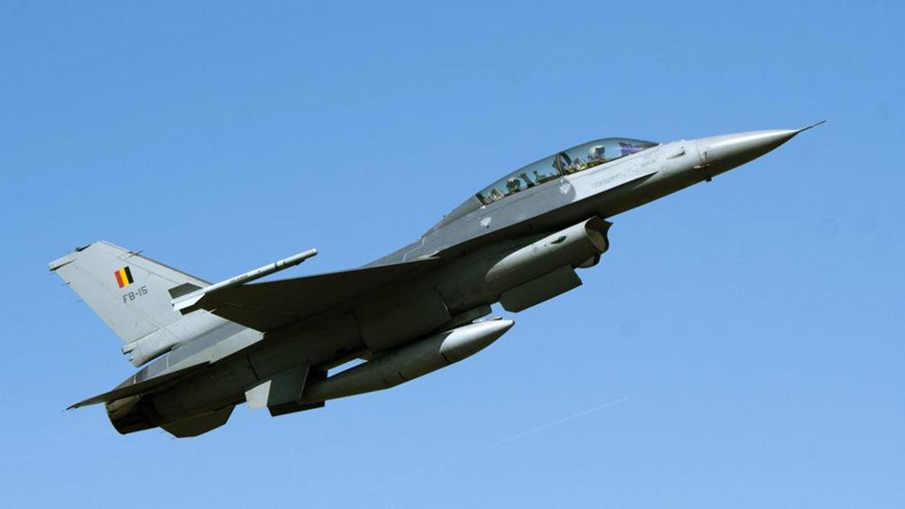
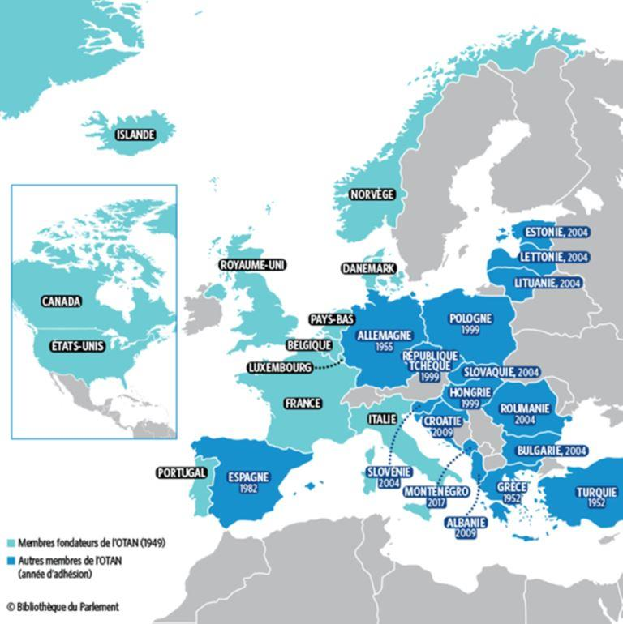

Le piège du lien transatlantique : comment sortir de ce piège ?
par Cercle de Réflexion Interarmées
L’OTAN subordonne l’UE aux États-Unis
L’OTAN n’est pas une organisation respectueuse des spécificités de ses membres, mais un instrument à la main des États-Unis, imposant leurs normes dans tous les domaines et incitant leurs partenaires à s’équiper, pour beaucoup, de matériel américain de premier rang, en contradiction avec un partenariat industriel et commercial qui pourrait profiter à notre pays ou aux autres États européens. Il serait parfaitement légitimé par les fondements de la « construction européenne ». L’OTAN facilite la domination des États-Unis sur l’ensemble des pays occidentaux qui en sont membres et apporte une justification aux interventions militaires décidées par Washington.
Dans les 14 pays de l'est européen et des Balkans, l'équipement en matériels venu des usines d’outre-Atlantique est privilégié pour le remplacement de matériels anciens le plus souvent d'origine soviétique. Les choix de la Pologne, dont le budget de défense est le plus important parmi ces pays, ont souligné, notamment dans le domaine aéronautique, le lien très fort entre appartenance à l'OTAN et équipement en matériel américain. Acheter un matériel majeur d'armement à l'étranger est un choix très lourd engageant l’avenir pour des décennies, notamment au travers de la formation des personnels, et du soutien matériel et intellectuel.
Les procédures FMS1, d’appuis à l'exportation de matériels militaires, permettent aux pays qui les utilisent de se reposer sur la logistique des forces armées américaines. Elles constituent un moyen efficace de contrôler l'usage que font les pays bénéficiaires de leurs matériels. Autant dire que les décisions d’aujourd’hui hypothèquent l’avenir.
Toute occasion peut être bonne pour transformer l’incitation à acheter américain en obligation.
Ainsi l’obligation faite à la Belgique d’acheter un escadron de JSF 35 et à l’Allemagne de 45 F 18 Super Hornet et 15 E 18 Growler pour être admis, par Saceur, comme porteur pouvant délivrer la Bombe B 6, s’apparente à de la vente forcée. En effet :
- le raid nucléaire OTAN ne relèverait, dans sa décision et dans son plan de frappe, que du seul Saceur, aux ordres du président des États-Unis,
- les chasseurs–bombardiers des 6 armées de l’air impliquées ne seraient que des « mules » - pour reprendre l’appellation des porteurs de drogue – chargées d’une bombe – B 61 – sur ordre du seul président des États-Unis. Constatons que cette arme a été retirée partout du service par l’USAF sauf en Europe - en particulier pour son infime probabilité de pénétration des défenses sol-air d’aujourd’hui et de demain.
Cela étant, il ne faut donc pas s’étonner que l’industrie militaire française et européenne, ne puisse équiper pleinement les armées des pays membres.
Pire, sur la décennie, la balance commerciale armements avec les États-Unis se trouve dans un rapport de 1 à 11 :
- ventes de l’Europe aux États-Unis : environ 7 milliards $,
- ventes des États-Unis à l’Europe : environ 77 milliards $.
Pour faire bonne mesure, ce 10 octobre 2020, la Finlande, pays de l’UE depuis le 1er janvier 1995, et les États-Unis officialisent la négociation d’un achat, au plus tôt, de 74 F18 Super Hornet et E 18 Grawler ou 60 JSF 35, avec toute leur dotation en munitions air-air et air-sol, pour un total de 13 Milliards $. Tous matériels et équipements produits dans des standards identiques par nos entreprises européennes.
La totalité des États européens, membres de l’OTAN, se soumet à la volonté des États-Unis.
Certains cherchent à se positionner comme de bons disciples et à relayer la volonté de Washington. Au sein de l’Alliance, sans contrarier Washington, ils poursuivent leur propre intérêt.
Un pays, comme l’Allemagne, dévoile son ambition, au sein de l’OTAN, mais aussi en Europe, d’être le relais fidèle des États-Unis. « Prouver » son « rôle central » dans l'alliance militaire transatlantique est affirmé comme un « intérêt essentiel » pour l’Allemagne. Il est certain que son tropisme historique vers la Mittel-Europa la pousse aussi à agir dans ce sens.
Ainsi, voyait-elle, dans l’exercice Defender 2020, perturbé à cause de la crise de la Covid-19, une occasion de garantir la capacité opérationnelle du Commandement de soutien interarmées (JSEC)2 allemand, lui permettant de se rapprocher de sa prétention à devenir la première puissance militaire d’Europe.
Elle se situe donc résolument au-delà des problèmes de maintien en condition du matériel et d’entraînement que connaît actuellement la Bundeswehr.
Dans la revue InfoBrief Heer publiée par le Förderkreis deutsches Heer (FKH), un groupe de réflexion défendant les intérêts de l'armée allemande, il est écrit que « l'implication du JSEC dans cet exercice otanien, sert à la « préparation » du commandement en vue d'une « coopération opérationnelle complète ».
Selon le FKH, « l’intention à long terme » est la « création d’un réseau de forces armées multinationales » sous la direction du JSEC, en tant que « noyau d’une intégration militaire encore plus étroite en Europe ». De cette manière l’Allemagne «respecterait les aspirations politiques énoncées dans le Livre Blanc de 2016, d'assumer sa responsabilité de direction».
L’affichage d’une telle volonté, montre, à l’envi, non seulement un désir d’influence, voire de direction des autres armées européennes, mais surtout le souhait d’une plus grande intégration otanienne sous la tutelle des États-Unis. Cette détermination est, évidemment à mettre en perspective avec l’ambition, non dissimulée, d’affaiblir la position militaire et géopolitique française, fragilisée par la naïveté ou l’idéalisme de ses responsables, en « mutualisant » la dissuasion nucléaire et en accédant, d’une manière ou d’une autre, au siège permanent de la France au conseil de sécurité.
Cette attitude est confortée par la prééminence économique actuelle de l’Allemagne sur la France obtenue grâce à la maîtrise financière de l’euro et des mesures structurelles sévères.
« Lors de la 27ème Conférence des Armées Européennes, organisée à Wiesbaden le 24 octobre 2019, au quartier Général de l'US Army en Europe, le chef d’État-Major de l’armée de Terre (deutsches Heer) et son homologue américain ont signé un accord bilatéral de "vision stratégique" dont l'objectif est de porter leur interopérabilité à un niveau inégalé à ce jour ».
Cet accord devrait permettre d'ici à 2027 à un régiment allemand d'opérer sous le contrôle d'une brigade de l'US Army, à l'égal d'une unité nord-américaine ; de même une division pourrait connaître un identique positionnement. Cela au prétexte qu'une plus grande interopérabilité entre l’armée allemande et celle des États-Unis est essentielle, pour faire face aux multiples menaces auxquelles l'OTAN est confrontée.
Cet accord suppose que les unités allemandes et américaines aient des systèmes d'information compatibles et des procédures communes. Il est aussi question d'initiatives partagées en matière de combat collaboratif et de munitions.
Selon le général Ben Hodges, ex-Commandant en chef de l'US Army, cet accord devrait permettre de déboucher sur un statut analogue à celui de l'Alliance des Services de Renseignements américain, australien, britannique, canadien et néo-zélandais, les FVEY (Happy few Five Eyes)3 : « la clé réside dans les changements politiques et technologiques nécessaires ».
Alors que toutes les forces engagées dans l’OTAN sont, par nature interopérables, et toutes aussi rompues « au combat collaboratif et à la standardisation des munitions », que l’armée allemande choisisse l’intégration complète de grandes unités dans les forces américaines, démontre une volonté préoccupante de subordination et de démarquage par rapport aux autres membres de l’alliance.
Il est certain que les États-Unis voient dans cet accord la préfiguration de ce qui devrait se réaliser avec les autres armées européennes.
Certains pourraient dire que cet alignement allemand procède d’un sentiment de culpabilité rémanent pour avoir provoqué le second conflit mondial et laissé une image douloureuse, d’autres, au contraire, d’un désir de réaffirmation… En tout état de cause, il prive la France, sur ce sujet majeur, de son partenaire initial.
Cette politique est sans doute circonstancielle. Elle ne doit pas nuire à l’avenir d’une indispensable coopération entre les deux pays. D’autant plus que la France, depuis longtemps, dispose, elle aussi, de forces pouvant être associées avec les forces américaines.
Mais face au concret des situations, il serait risqué de compter sur une indéfectible solidarité de l’Allemagne avec la France.
La France, dans la crise opposant la Grèce à la Turquie, membre de l’OTAN, s’est trouvée initialement seule pour soutenir la Grèce, à la fois membre de l’UE et de l’OTAN. Pire, l’Allemagne au lieu de se ranger du côté de ces deux pays membres de l’UE, a voulu s’ériger en arbitre.
Il faut malheureusement constater que l’Allemagne est, quelque part, l’otage de sa forte minorité turque et que les États-Unis, maîtres de l’OTAN, demeurent tributaires de la Turquie, partenaire otanien, face à la Russie. Avec cinq millions de Turcs sur son territoire, plus de 20 milliards de commerce avec Ankara chaque année et un besoin impérieux de gaz pour assurer sa sortie du charbon et du nucléaire, l’Allemagne n’a pas vraiment les moyens de s’attirer l’hostilité d’Ankara.
Elle ne soutient pas la Grèce, la France et désormais l’Italie, dans leur opposition aux ambitions turques sur l’extension des eaux territoriales de la Turquie au détriment de la Grèce, sur fond de recherche pétrolière. Cette situation est pourtant éminemment périlleuse. Elle a déjà vu un incident entre la frégate française Courbet et la frégate turque Oruçreis le 10 juin 2020, quand bien même il était officiellement lié au non-respect de l’embargo des Nations Unies sur la Libye par la Turquie.
L’Allemagne provoque ainsi la création d’une fracture au sein de l’UE et de l’OTAN.
Quant aux États-Unis, ils ne déjugent pas l’Allemagne, leur principal allié, d’autant plus que la Turquie, autre allié, leur est indispensable sur le flanc sud de la Russie mais aussi, pour des raisons d’approvisionnement pétrolier. Au total l’OTAN brille par son mutisme !
Cette crise fait craindre un attentisme préoccupant, tant de l’OTAN que de l’UE, et laisse mettre en doute la solidité de ces deux organisations dans la défense et la sécurité de l’un ou l’autre de leurs membres.
Quant aux États de l’ancienne Europe de l’est, ils sont reconnaissants aux États-Unis de les avoir délivrés de la tutelle soviétique et considèrent que seule une forte alliance avec eux peut les protéger d’une éventuelle menace russe.
Les faits nous amènent à relever l’étroite subordination de l’UE à l’OTAN
Avant même l’institution de l’UE, à Maastricht, en 1992, c’est l’OTAN qui arrêta, lors du sommet de Rome, un certain nombre de critères auxquels devraient se conformer les premiers candidats à l’adhésion. Sortant de son rôle militaire et de défense, elle se comporta en référence morale et fixa ce qu’elle entendait par « bonne conduite » en matière d’économie, de régimes politiques, de droits de l'homme, ou encore de contrôle démocratique des forces armées4.
L’UE, en construction, reprit fidèlement tous ces critères.
Il est remarquable de noter que dans la très grande majorité des adhésions, la chronologie montre que, soit l’OTAN précède l’UE, soit qu’existe une quasi-synchronisation. De facto, pour les pays candidats, leur acceptation par l’OTAN garantit leur entrée dans l’UE : pour preuve les calendriers respectifs d’adhésion : Hongrie, Pologne, République Tchèque admises dans l’OTAN en 1999, et dans l’UE en 2004 ; Estonie, Lettonie, Lituanie, Slovaquie, Slovénie dans l’UE et l’OTAN, simultanément, en 2004. Procédé évidemment contraire aux accords Reagan-Gorbatchev, de ne pas attirer dans l’OTAN les pays de l’est ! Une erreur ou provocation diplomatique entraînant une défiance compréhensible et durable de la Russie envers l’« Ouest » et le désir de se faire respecter.
Une forte osmose entre les deux organisations est indéniable et, hélas, inévitable. Elle est notoire dans l’attitude à l’égard de la Russie où l’UE s’aligne sur la politique de pression, de sanctions et de marginalisation voulue par les États-Unis relayées par l’OTAN. L’UE se trouve ainsi associée aux politiques interventionnistes américaines en Europe comme hors de l’Europe.
L’UE, semble avoir délégué la conduite de sa politique extérieure à l’OTAN et, par voie de conséquence, aux États-Unis.
Outre le risque de voir les peuples européens entraînés dans un conflit contraire à leurs intérêts, l’OTAN, porte en elle-même, une sévère menace.
La Turquie, laisse peser sur l’Europe une grave hypothèque face au risque migratoire. Ayant rejeté son organisation laïque, ce pays s’est rapproché des fondamentalistes musulmans, agents du terrorisme islamiste. Il exerce un chantage vis-à-vis de l’UE, menaçant de ne plus retenir une émigration musulmane de masse.
Ce chantage lui a rapporté quelques milliards d’euros de contrepartie. De plus l’UE vient de lui accorder une « rallonge de 485 M€ » pour retenir les migrants. Notons aussi que sur les 300 imams étrangers prêchant en France, 150 sont turcs.
Or la Turquie demeure, selon les textes, un allié, qui plus est candidat à l’intégration dans l’UE dont elle obtient toutes sortes d’aides pour le maintien d’un statu quo. L’UE laisse ainsi la Grèce, seule, pour protéger militairement les limites de l’Union en mer Égée. Nous sommes confrontés à une dangereuse incohérence.
La philosophie politique américaine en arrière-plan des attitudes au sein de l’UE
La philosophie des États-Unis d’Amérique d’abolir, ailleurs, les États-nations, est en fait déterminante dans leur relation avec l’Europe.
Elle est exprimée par le transnationalisme de quelques notables ou institutions qui, au nom d’une pseudo-obsolescence de ses structures historiques, souhaitent une organisation globalisante dirigée par les banques et les géants économiques. Elle serait, inévitablement et solidement, fédérée par Washington. Cette philosophie, impérialiste, lourde d’hypocrisie, est une constante de la politique américaine.
Ainsi, lors de l’affaire du Rwanda, les États-Unis, agissant en sous-main, souhaitaient l’éclatement des pays de l’Afrique des Grands lacs au profit d’un ensemble nouveau dirigé à partir de Kampala, de langue anglo-saxonne, et aux ordres de Washington. De même leurs interventions au Proche-Orient visaient à créer un chaos préalable à leur domination. De cette situation ils espéraient tirer profit en restructurant, dans une unité singulière, selon leur volonté, les États issus des accords Sykes-Picot de 1916.
S’agissant de l’« Europe » il est désormais patent que les initiateurs de son organisation étaient directement influencés par les États-Unis.
Enfin le système ultra-libéral, très largement d’inspiration anglo-saxonne, a conduit les gouvernants français, au mépris de toute prudence, à concéder à l’étranger, hors UE, des pans importants de notre souveraineté et de notre autonomie. Au nom d’une mondialisation, mal comprise, et d’une utopie européiste et pacifiste, c’est notre liberté et la dimension de la France qui ont été engagées.
Par voie de conséquence l’indépendance militaire, voire notre capacité à appliquer notre doctrine de dissuasion sont, sinon empêchées, du moins fortement contrariées.
Quant à la crise de la covid-19, elle a démontré les énormes failles dans la sécurité sanitaire du pays. Cela a fait comprendre que d’autres piliers de notre sécurité dépendaient désormais de décisions étrangères.
À titre d’exemple, si un système d’armes, contient au moins un composant américain, il tombe sous le régime de la réglementation ITAR5. Les États-Unis s’arrogent, alors, le pouvoir d'en interdire la vente à l'export à un pays tiers qui ne leur convient pas. Or beaucoup de sociétés françaises intègrent des composants en provenance de ce pays, notamment électroniques, dans de nombreux matériels aéronautiques et spatiaux. Cette procédure leur donne la possibilité de contrôler nos exportations si elles sont en concurrence avec les leurs – ou en divergence avec leur politique extérieure.
Cette politique est parente de l’application de l’ «International Emergency Economic Powers Act», loi fédérale américaine de 1977, qui sanctionne financièrement toute société traitant avec des pays dont l’attitude ne convient pas à Washington. Ainsi, en 2014, la BNP subit une pénalité de 9 Md$ pour le financement d’usines Peugeot en IRAN.
Un autre exemple récent de cette dépendance peut être trouvé dans l’interdiction faite par l’Allemagne à l’exportation du missile air-air longue portée METEOR de MBDA vers l’Arabie saoudite, au prétexte qu’elle participe au système de propulsion et la charge militaire.
Ajoutons la totale dépendance vis-à-vis de l’étranger pour l’approvisionnement de toutes nos armées en munitions, bonnes de guerre, de petits calibres. Nous pouvons imaginer les conséquences, si la France, pour ses besoins propres, dans une politique internationale ou intérieure indépendante, ne convenant pas à ses alliés, avait un besoin impératif de ces armements.
Ajoutons enfin que l’allégeance à l’OTAN nous a amené à ne pas développer certaines branches de notre défense qui aujourd’hui nous rendent dépendants des États-Unis ou d’autres pays, dans nos interventions outre-mer.
Comment sortir de ce piège ?
Les enseignements que nous pouvons tirer de ces faits sont déterminants pour définir une politique de défense de la France qui pourrait inspirer quelques pays européens, à condition qu’ils veuillent bien accepter l’idée de cette nécessaire évolution de leurs rapports entre eux et avec les États-Unis :
- soit nous abandonnons la trajectoire de l’histoire de France en acceptant un alignement complet sur Washington et en admettant que l’Allemagne, sur le continent européen, en devienne le pilote et l’allié privilégié des États-Unis. Certes, l’Allemagne a l’avantage de sa position géographique centrale en Europe, de ses performances économiques et d’une population nombreuse - 83 millions d'habitants au 31 décembre 2019 - mais vieillissante, malgré un apport sur l’année de 300 000 migrants à l’origine d’un léger rebond de la natalité.
- soit nous mettons tout en œuvre pour recouvrer l’essentiel de notre souveraineté et la maîtrise de notre sécurité. La France, avec son poids historique sur l’Europe, son universalisme reconnu, sa dimension internationale et en particulier militaire qui fait d’elle la seule puissance nucléaire européenne - et du meilleur niveau- peut prétendre à une primauté.
Dans cette dernière hypothèse il est bien évident qu’elle devra exercer une forte pression sur ses partenaires et sur l’UE dont une des armes pourrait être la menace d’une séparation. Cela n’implique en aucune façon un isolationnisme, un divorce d’avec l’OTAN, mais l’établissement de relations harmonieuses et sans subordination au sein de l’Alliance.
Cependant comment la France peut-elle se faire entendre ?
La communauté nationale se révèle vulnérable à toutes sortes de violences, sans traitement militaire, et l’appareil d’État est affaibli, sa marge de manœuvre réduite par une crise économique et sociale extrêmement difficile à maîtriser, générée par la pandémie de la covid-19. De plus son horizon politique est subi. Il est en effet dominé par l'établissement d'une Europe aux contours mal définis, contrainte par la tutelle des États-Unis et le retour d'une influence grandissante de la Russie sur la scène internationale.
La position de la France n’est pourtant pas désavantageuse, même si elle a bien du mal à conserver sa liberté d'action. C'est plutôt la faiblesse de l'Europe qui est préoccupante.
Dans l’hypothèse d’une fidélité à la voie historique, il faut être conscient des obstacles précédemment évoqués et des contraintes internes.
Il sera très difficile de convaincre nos voisins de la justesse de cette orientation.
L’Allemagne suit sa propre ambition de puissance et s’aligne délibérément sur les États-Unis.
Le Royaume-Uni, ayant quitté une UE trop pesante et trop germanique, liée à Washington, ne s’opposera jamais aux États-Unis avec lesquels il partage bien des aspects culturels, linguistiques, économiques et politiques.
Notons toutefois que la France et le Royaume-Uni se sont entendus en octobre 1995 pour une dissuasion concertée. Les autres pays de l’UE n’ont aucune velléité de s’affranchir des chaînes otaniennes. Le dispositif actuel leur convient.
Seule la France a des raisons de mener une politique de défense autonome. Sans remonter le cours de l’histoire, il est évident qu’elle demeure une grande puissance avec ses spécificités et une légitimité pour rayonner et défendre ses intérêts dans le monde. Elle dispose de la première armée d’Europe, d’un des premiers budgets de défense, mais au-delà du budget, il faut surtout voir la réalité des capacités opérationnelles. Constatons que son armée est la seule à laquelle les États-Unis confient le commandement d’une «task force» intégrant l’US Navy, l’US Army et l’USAF; qu’elle est la seule puissance nucléaire crédible et légale en Europe, et enfin que la France est membre permanent du Conseil de Sécurité de l’ONU.
Elle risque toutefois d’en perdre lentement les caractéristiques en continuant à s’aligner sur une politique européenne qui lui échappe. Son influence n’a cessé de décroître. Elle ne joue plus un rôle moteur. Le seul exemple de la progressive substitution de la langue anglo-saxonne au français, langue d’origine de l’Europe, est la preuve magistrale de ce déclin. Ainsi madame Ursula von der Leyen, ancienne ministre de la Défense allemande et, depuis juillet 2019, présidente de la commission européenne, utilise presque systématiquement la langue anglaise dans ses interventions, alors qu’elle est aussi francophone.
Bien sûr, certains de nos dirigeants ont une part de responsabilité, en ayant accédé à tous les abandons culturels, par patriotisme assoupi, américano-tropisme ou myopie géopolitique. Il n’empêche que le symbole est fort.
Les atouts de la France sont pourtant considérables, mais aujourd’hui, par facilité ou adhésion de certains politiques à cette vision mondialiste évoquée, ils ne sont que très peu mis en valeur, voire pas du tout. Certaines évidences doivent être soulignées.
L’Europe, orientation principale et naturelle de notre pays, n’est cependant pas son seul horizon.
La Russie n’est pas notre ennemie. Elle est probablement, dans l’histoire européenne, le pays contre lequel la France s’est le moins battue. Son élite, traditionnellement, longtemps francophone est demeurée francophile. De plus la France, en tant que nation, a des intérêts qui ne sont pas ceux de ses alliés.
Rien, même au sein de l’OTAN, n’interdit une politique propre ; sauf à nous démontrer une incompatibilité avec des règles acceptées.
Le rapport Harmel au Conseil de l’Alliance Atlantique des 13 et 14 décembre 1967, l’exprimait. Il laissait aux États une totale liberté d’action en définissant les futures tâches de l’Alliance. Ainsi sa recommandation n°8 stipule que « En tant qu’États souverains, les Alliés ne sont pas tenus de subordonner leur politique à une décision collective.
L’Alliance fournit un forum et un centre efficace pour les échanges d’informations et de vues ; ainsi, chacun des Alliés peut-il arrêter sa politique à la lumière d’une connaissance approfondie des problèmes et des objectifs de tous les autres ».
Les faits ne traduisent pourtant pas ces affirmations.
La montée en puissance de la Chine est inexorable ; et sans doute demain l’Inde suivra. La qualité de sa dissuasion, l’importance donnée à sa Marine en sont des signes avant-coureurs. Les États-Unis en sont conscients, et redoutent un monde multipolaire :
« les systèmes multipolaires sont intrinsèquement sujets à la compétition, la confrontation, l’instabilité et à des guerres entre États…Nous entrons dans cet avenir multipolaire, le conflit entre les États-nations est pratiquement certain à plus ou moins long terme». (Gal M Milley US JCofS).
En cela il est rejoint par nos propres Chefs d’État-major des trois armées qui prédisent aux élèves officiers, comme par exemple le Chef d’État-major de la Marine, «que leur génération aura sans doute à livrer bataille sur mer» - Amiral P. Vandier - École Navale-Septembre 2020.
Pour les États-Unis, le maintien de leur position dominante, d’abord sur le monde occidental puis face à la Chine, ne peut se poursuivre qu’avec tout le potentiel d’une Europe soudée à eux dans une OTAN aux ordres.
Cela implique dès aujourd’hui de recréer aux frontières de l’Est l’ennemi russe, réincarnation du vieil épouvantait soviétique, capable d’inquiéter les Européens. Les exercices de l’OTAN depuis 2017 permettent de mettre en exergue une menace guerrière et de créer une psychose.
Cette supposition aventureuse va jusqu’à envisager un échange de frappes nucléaires tactiques sur le sol européen dont la présence effective de missiles « upgraded », et la doctrine d’emploi affichée, renforcent la crédibilité.
DANS LE PROCHAIN NUMÉRO DE « MÉTHODE » : LA FRANCE POSSIBLE CREUSET DE L’AUTONOMIE EUROPÉENNE GRÂCE À SES ATOUTS
Pour le Cercle de Réflexions Interarmées.
Général (2S) Henri Roure
Général (2S) Jean-Serge Schneider
Ingénieur Général de l’Armement (2S) Louis A. Roche
Général (2S) Marc Allamand
Général (2S) Jean Claude Allard
Capitaine de Vaisseau (ER) Alexis Beresnikoff
Général (2S) Grégoire Diamantidis
Monsieur Marcel Edouard Jayr
Contre-Amiral (2S) François Jourdier
Général (2S) Christian Renault
Général (2S) Jean-Claude Rodriguez
Général (2S) Jean-Pierre Soyard
Général (2S) François Torres
NOTES ET RÉFÉRENCES
1. Foreign Military Sales: FMS; vise à faciliter les ventes d’armement d’État à État (du moins, ceux qui sont autorisés par le département d’État), via la Defense Security Cooperation Agency (DSCA) du Pentagone. Les FMS «font progresser les objectifs de sécurité nationale et de politique étrangère car elles renforcent les relations bilatérales dans le domaine de la défense, soutiennent la constitution de coalition et augmentent l’interopérabilité entre les forces américaines et alliées». Chaque transaction est, au préalable, soumise à une demande d’autorisation du Congrès
2. Joint Support and Enabling Command: La création du Commandement interarmées du soutien et de la facilitation (JSEC) et celle de son QG jumeau, le Commandement de forces interarmées (JFC) de Norfolk, a été entérinée par les ministres de la Défense des pays de l’OTAN en février 2018. Le JFC de Norfolk contribue à garantir que les voies maritimes entre l’Amérique du Nord et l'Europe restent sûres, le JSEC couvre ce que l’on appelle la « zone arrière » en Europe.. Le JSEC fait partie de la structure de forces de l'OTAN et relève du commandement opérationnel du Commandant suprême des forces alliées en Europe (SACEUR)
3. Système « Échelon ». FVEY (Five Eyes) désigne l'alliance des services de renseignement de l'Australie, du Canada, de la Nouvelle-Zélande, du Royaume-Uni et des États-Unis, reliés entre eux par l'accord UKUSA qui prévoit la coopération entre les différents services assurant la collecte de renseignements électromagnétiques.
4. « Élargissement de l’OTAN. Pour pouvoir adhérer à l’Alliance, les pays doivent respecter les valeurs énoncées dans le Traité de l’Atlantique Nord, et satisfaire à un certain nombre de critères politiques, économiques et militaires Il leur est demandé d’avoir un système politique démocratique fonctionnant bien et reposant sur une économie de marché ; de traiter les communautés minoritaires de manière équitable ; de s’engager à régler les conflits de manière pacifique ; d’être capables et désireux d’apporter une contribution militaire aux opérations de l’OTAN ; et d’être attachés au caractère démocratique des relations entre civils et militaires et des institutions»
5. Internatiional Traffic of Arms Reglementation: Réglementation américaine sur le trafic d'armes au niveau international ITAR désigne un ensemble de règlements du gouvernement fédéral américain servant à contrôler les importations et exportations des objets et services liés à la défense nationale, tels que recensés sur la « Liste des matériels de guerre et assimilés américains » (United States Munitions List, USML)
Partager cette page